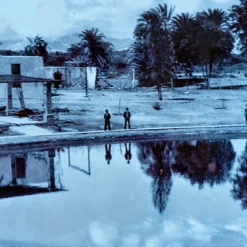
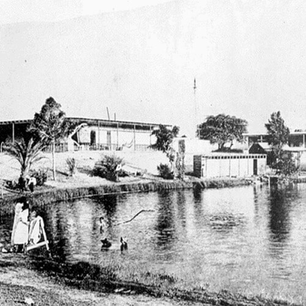

Ica es una provincia ubicada al sur de lima, a unas tres o cuatro horas aproximadamente. Es conocida principalmente por tener a el oasis de la Huacachina entre sus principales atractivos. Pero, esta no es la única laguna conocida, especialmente para la gente de la zona. La laguna de La Huega actualmente se encuentra extinta. Estaba ubicada entre las dunas del desierto de Ica, pero ahora todo esta abandonado y sin ningún rastro de haber sido la hermosa laguna que algún día fue. A pesar de estar extinta, los lugareños siguen contando la historia de la creación de esta laguna, la cual es una de las leyendas más conocidas en Ica.

¿Dónde surge la Leyenda de La Huega?
Como ya lo mencionamos anteriormente, esta historia pertenece a los mitos y leyendas de la provincia de Ica. La laguna se ubicaba a 1.5 Km aproximadamente al sur del oasis de la Huacachina, separados por unas grandes e imponentes dunas en medio del desierto iqueño. Es ahí donde se centra la historia y que es contada hasta ahora por los pobladores de pueblos cercanos.
¿De qué trata la leyenda de La Huega?
Esta historia se cuenta en Ica desde hace muchísimos años. Cuenta la leyenda que había una mujer muy hermosa, de cabellos rubios largos, que siempre se estaba mirando al espejo. Esta mujer estaba en medio de las dunas, rodeada de palmeras y algunas otras plantas, y siempre estaba mirándose al espejo.

En una ocasión un caminante que se había perdido en la ruta, divisó a lo lejos unos árboles, y se acercó para poder descansar y refrescarse un poco bajo la sombra. Fue bajando por las dunas hasta llegar a esa zona. Mientras se iba a acercando, pudo divisar a la mujer sentada viéndose al espejo. Poco a poco fue acercándose con mucho cuidado y curiosidad. Entonces, en un momento dado, el caminante se acercó a la mujer para preguntarle el motivo del porque estaba en ese lugar tan alejado, y sola. Al acercarse para conversar con ella, hizo un pequeño ruido que fue notado por esta mujer. Lo que pasó a continuación lo sorprendió. La mujer volteo rápidamente a ver que había causado ese ruido en medio de los árboles que la rodeaban. Al voltear, notó al hombre que se iba acercando hacia ella. Esto la asustó bastante, porque nunca antes había visto a ninguna persona. Lo que hizo a continuación fue salir corriendo despavorida, lo que ocasionó que soltara el espejo que llevaba en sus manos, y este cayó al suelo del desierto. La leyenda cuenta que cuando el espejo toco la arena del desierto, se formó la laguna a la que bautizaron como La Huega.